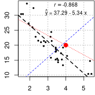

R统计 回归分析
目录
要点: 有效的回归分析是一个交互的、整体的、多步骤的过程。[R in action, 2nd Edition, chapter 8,13]
简单线性回归
线性回归标注
什么是R2 ？在回归模型中，因变量（y）总的方差（信息）可以被称作总平方和（Total sum of squares，TSS），它由两部分组成：
1. 模型可以解释的那部分信息（Model sum of squares, MSS;
2. 模型解释不了的那部分信息，也称为error（Residual sum of squares, RSS。
R2 指的是模型可以解释的那部分信息所占的百分比，即MSS/TSS。如果R2越大，那该模型能解释的部分也就越多，模型当然就越佳。
核心语句: plot(mpg~wt, data=mtcars) #画散点图 fit=lm(mpg ~ wt, data=mtcars) #线性回归拟合 abline(fit) #画回归曲线
图1 标注决定系数R^2和p值。 图2 标注相关系数r和回归公式。 图3 使用ggplot2画回归曲线并标注决定系数。
#线性回归 model=lm(y ~ x, data=test)
model=lm(mpg ~ wt, data=mtcars)
model
modsum=summary(model)
modsum
r2 = modsum$adj.r.squared; r2 #R^2=0.7445939
my.p = modsum$coefficients[2,4]; my.p #1.293959e-10
library(car)
# 相关检验 correlation
corTest=cor.test(mtcars$mpg, mtcars$wt)
corTest$p.value #1.293959e-10 就是前面lm中对斜率的p值
r=round( corTest$estimate, 3) ;r # r=-0.8676594 相关系数
###############
# 图1
# set up an example plot
png(filename="01.png", width=75*2.5, height=75*2.5, res=75)
# pdf(file="01.pdf", width=2.5, height=2.5)
# pdf 单位是 2.5 inch,
# png 单位是 dot(default pixels == dot 像素点),
# 按照分辨率 75 dpi(dot per inch)，
# 2.5inch pdf对应的png 长度应该是 75 dot/inch * 2.5inch=187.5dot
# png 保存的图比pdf再截图文件大小要小，是前者的 35%。
par(mar=c(2.3, 2.3, 0, 0)+0.1) # (b,l,t,r) 完全没白边，没顶部标题
plot(mpg~wt, data=mtcars, pch=19, cex=0.5, mgp=c(1.5,0.5,0))
abline(model, lty=2, lwd=2)
# 作为图例
# https://lukemiller.org/index.php/2012/10/adding-p-values-and-r-squared-values-to-a-plot-using-expression/
rp = vector('expression',2)
rp[1] = substitute(expression(italic(R)^2 == MYVALUE),
list(MYVALUE = format(r2,dig=3)))[2]
rp[2] = substitute(expression(italic(p) == MYOTHERVALUE),
list(MYOTHERVALUE = format(my.p, digits = 2)))[2]
legend(3.2, 35, legend = rp, bty = 'n', cex=0.8)
#添加相关系数 r
text(x = 2.3, y = 12, labels = bquote("r = "~.(r)), cex=1)
dev.off()
###############
# 图2
# panel.first / panel.last：作图前(后) 要完成的工作\\
# panel.first=grid()：作图之前先添加网格线
plot.new()
# method1: 2步法，不好
plot(mpg~wt, data=mtcars,
pch=19,
#panel.first=grid() #无效
panel.first=abline(h=seq(10,45,5),v=seq(1,5,1),lty=3, lwd=1.5, col="gray")
)
grid(col="red") #网格画到图上了，不好
png(filename = "02.png", width=75*2.5, height=75*2.5, res=75)
#method2: 一步法，网格在图下。推荐用法
par(mar=c(2.3, 2.3, 0, 0)+0.1)
plot(data.frame(wt=mtcars$wt, mpg=mtcars$mpg),
pch=19, cex=0.5,
#panel.first=grid() #有效
panel.first=abline(h=seq(10,45,5),v=seq(1,5,1),lty=3, lwd=1.5, col="grey")
)
# standard line of best fit - black line
abline(model, lty=2, lwd=2)
# force through [0,0] - blue line
#abline(lm(y ~ x + 0, data=test), col="blue", lty=2)
abline(lm(mpg ~ wt + 0, data=mtcars), col="blue", lty=2) #过原点
# 如果要求过其他点呢？(2,15)
points(4,20, col="red", pch=19, lwd=4)
nmod=lm( I(mpg-20) ~ I(wt-4) +0, data=mtcars) #+0(网页上看到的)和-1(书上写的)效果相同。
abline( predict(nmod, newdata = list(wt=0))+20, coef(nmod), col='red', lty=3)
# 添加文字、公式
# Adding p values and R squared values to a plot using expression()
a=round(as.numeric(model$coefficients[1]),2);a
b=round(as.numeric(model$coefficients[2]),2);b
if(b < 0){ #负斜率，手动加-号
text(4, 31, labels=bquote( hat(y)~"="~.(a)~"-"~.(-b)~"x" ), cex=0.8)
}else{ #正斜率要+号
text(4, 31, labels=bquote( hat(y)~"="~.(a)~"+"~.(b)~"x" ), cex=0.8)
}
# 添加r:右上角
mylabel = bquote(italic(r) == .(format(r, digits = 3)))
text(x = 4, y = 33.5, labels = mylabel, cex=0.8)
dev.off()
###############
# 图3 使用ggplot2 绘制回归曲线
library(ggplot2)
fit=lm(mpg ~ wt, data=mtcars) #线性回归拟合
png("01.png", width=72*2.5, height=72*2.5, res=72)
ggplot(mtcars, aes(wt, mpg)) +
geom_point(shape = 1, fill = "white", color = "palegreen4") +
geom_smooth(method = "lm", formula =y~x, se = F, color = "palegreen4") +
#theme_minimal() + theme_bw()+
theme_classic()+
annotate("text", x = 4, y = 30,
label = paste0("R-squared: ", round(summary(fit)$adj.r.squared,3)*100,"%") ) +
labs()
dev.off()
更多模型处理函数
summary(model) #展示拟合模型的详情 coefficients(model) #模型参数：截距项和斜率 confint(model) #提供模型参数的置信区间 fitted(model) #列出拟合模型的预测值 hist(mtcars$mpg-fitted(model), n=20) hist(residuals(model), n=20) anova(model) #生成一个拟合模型的方差分析表，或者比较2个或更多拟合模型的方差分析表 vcov(model) #列出模型参数的协方差矩阵 AIC(model) #输出赤池信息统计量 predict(model, data.frame(wt=c(2.62, 3.46, 3.0) )) #给出新数据集，使用模型预测 par(mfrow=c(2,2)) #四格图 plot(model) #生成评价拟合模型的诊断图 fit=lm(weight~height, data=women) par(mfrow=c(2,2)) plot(fit) fit2=lm(weight~height+I(height^2), data=women) par(mfrow=c(2,2)) plot(fit2) hist( residuals(fit), n=20) #n和breaks一样
多项式回归
xx
多元线性回归
xx
广义线性回归
xx
参考资料
http://www.science.smith.edu/~jcrouser/SDS293/labs/lab2-r.html https://lukemiller.org/index.php/2012/10/adding-p-values-and-r-squared-values-to-a-plot-using-expression/